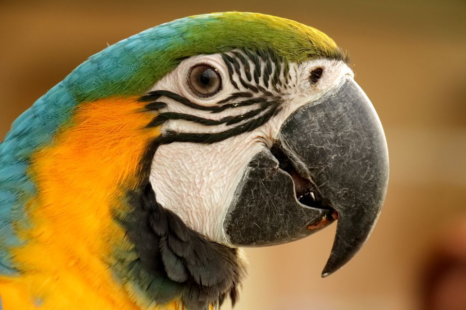
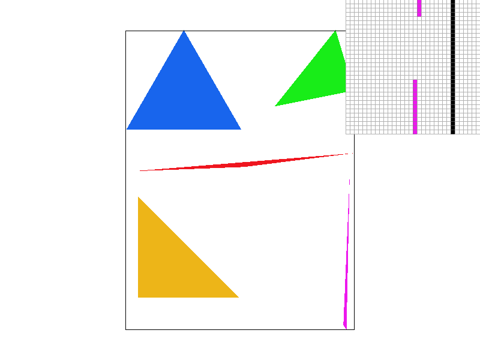
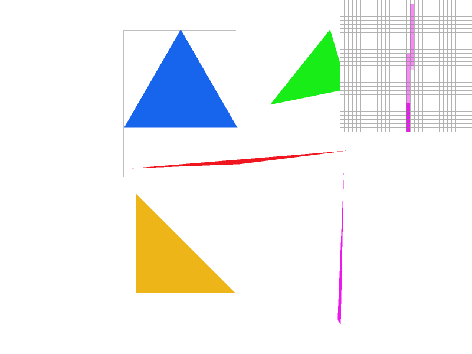
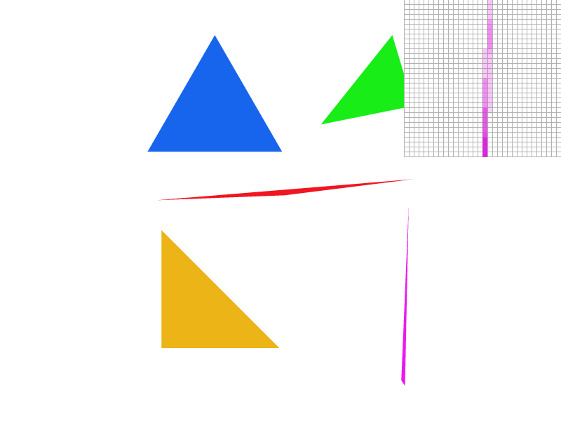
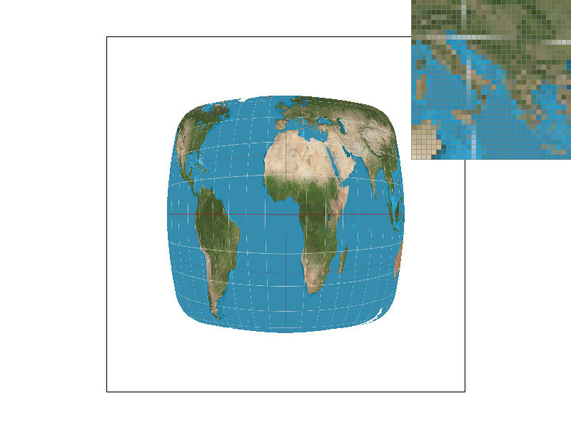
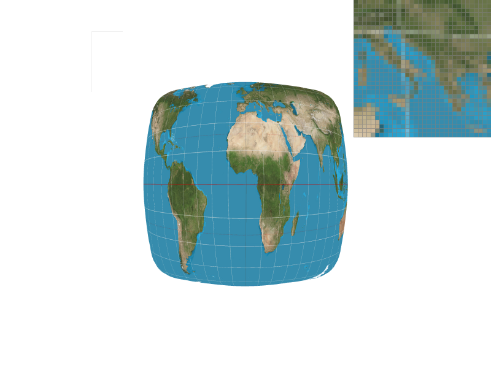
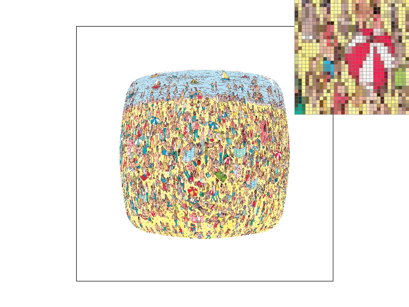
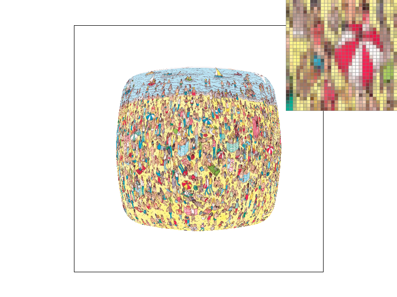
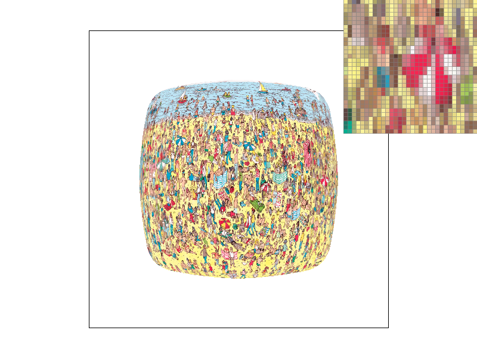
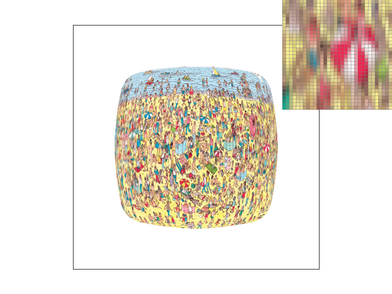

Overview
Give a high-level overview of what you implemented in this homework Think about what you've built as a whole. Share your thoughts on what interesting things you've learned from completing the homework.
Overall, this homework can be summed up as implementing rasterization. I implemented rasterizing triangles in the first task, adding supersampling in the second task. The third task seemed a little unrelated as it was about 2D transformations. The fourth task is back to rasterization as I used barycentric coordinates to implement interpolated triangles in which each pixel has a different color depending on how close or far they are from each vertex. In task five and six, we implemented rasterizing with colors that were defined by textures with multiple levels. At a very high level, we implemented the basics of drawing in 2D, allowed for smooth multicolor triangles, transformations, and colors based on texture maps. This homework was for sure lots of trial and error as I often changed small things and recompiled/tested to see the effects. This is the first homework so I especially appreciated how all the tests were visual and any bugs presented themselves in visual defects. Antialiasing was a term that I've heard in lots of contexts and after implementing it, I see some of the trade offs of antialiasing including performance impacts.
Section I: Rasterization
Part 1: Rasterizing single-color triangles
Here is an example 2x2 gridlike structure using an HTML table. Each tr is a row and each td is a column in that row. You might find this useful for framing and showing your result images in an organized fashion.

|

|

|

|
First, I'll be describing how I rasterize triangles without any fancy features. The first step is to identify the boundaries for the rasterization. We know the three vertices so If we don't want to scan the entire buffer, we can instead scan from the min x, min y to the max x, max y. We are guaranteed that the entire triange is in here. Next we want to iterate through the area we have identified. For every pixel in this area, we want to see if it's inside the triangle. To do this, we call the inside function in triangulation. We know that this function uses cross products to check if the "area" is positive or negative, thereby checking if the point is inside or outside the triangle. I added a check for all negative area in inside() to make sure that if all norm vectors to the edges of the triangle points out, then 3 negative areas indicates that the point is inside the triangle. After making sure point is inside, I call fill_pixel
My algorithm is no worse than checking all the samples in the bounding box because that is pretty much my algorithm. I find the bounds to the box and I check to see if
every point is inside. So my algorithm can be no worse.

Part 2: Antialiasing triangles
My supersampling is implemented by increasing the sample buffer size proportional to the sampling rate. I adjust the coordinates into super sampling coordinates by multiplying most values by square root of sampling rate. Super sampling increase the number of "subpoints" by a factor of sampling rate, so each direction, x and y, are increased by square root of that. Next, we go through the same checking to see if the point is inside the triangle algorithm. This time, we use the sampling coordinates and after checking, we call fill_pixel on the scaled coordinates. Recall that fill_pixel on interacts with the sample buffer and not the actual framebuffer. Nevertheless we want to change fill_pixel to also use sampling coordinates. After, we must change the resolve_to_framebuffer function. We will still iterate through the entire framebuffer, but for each point in framebuffer, we need to consider the sample rate number of supersampling points that are inside. So we iterate through those supersampling points and average their rgb value. By doing this, the overall pixel is supersampled and appear less distinct and blends in a lot more. By doing this for all pixels, we supersample all triangles drawn! Supersampling is useful because it tries to consider a buffer with higher resolution first, and then averaging using pool to make the image appear less jaggy and more smooth, giving the illusion that the image is of a higher resolution.
|

|

|
|

|
|
Part 3: Transforms

Section II: Sampling
Part 4: Barycentric coordinates
Shown right here is an image of a triangle that used barycentric coordinates to interpolate. Barycentric coordinates use the distances between the point and each vertex of the
triangle as a dimension. So each barycentric coordinate has 3 dimensions but can usually be represented in two since the third is easily derived. By getting a coordinate system
with regards to vertices, we are able to determine the color of the pixel based on a weighted average of the colors of the three vertices. This allows us to get a
smooth gradient for the colors inside the triangle. In this image, we can see that the closer we are to the red vertex, the more red we are, and this is the case for all
the other vertices as well. As we approach the center, we get a mix of all three colors. And this effect is nearly continuous, allowing for a very smooth gradient.

Part 5: "Pixel sampling" for texture mapping
Pixel samping is when we are given a texture and we want to sample to draw an image from it. There are a couple of things we can do. But for pixel sampling, we are basically extracting color from pixels in the texture. In nearest we extract the color from the nearest pixel in the texture while for bilinear we extract color from the 4 nearst pixels. For both, we sample from texture to draw into our buffer, achieving texture mapping.
|

|

|
|
|

|
From the images that I observed, bilinear seems to be similar to supersampling in the sense that it average pools and produces more blended points while nearest is more discrete and produces jagged edges. So bilinear would win out completely for sharp lines and lower resolution images because it provides more antialiasing. Logically, there will be a large difference between the two when it comes to images with lots of borders or images with lots of lines and edges, or even low resolution images.
Part 6: "Level sampling" with mipmaps for texture mapping
Level sampling is when we use levels that have varying degrees of detail to sample from. We have three techniques to level sample. First is level zero where we just sample from level zero, which is pretty much pixel sampling since level 0 is pretty much the original texture. Next is nearest where we sample from the level nearest according to our uv derivatives. Lastly is linear where we do a weighted average sampling of the two nearest levels according to the level we get from derivatives. I implemented level sampling by calculating uv derivatives and getting the norm of our differentials. This gives us the level and from the level we can access the textures like we did in part 5 to sample. Matter of fact, we actually straight up use the functions in part 5.
Given the three sampling methods, that is, pixel, level, or multiple samples per pixel, we can analyze the trade offs here. So we know that the cheapest is pixel since we are just taking into account nearest samples of a single level. For level sampling, we could be taking into account multiple levels with linear, so that is a little slower. The slowest is samples per pixel since we would be iterating through a non-constant/adjustable amount of samples per pixel, adding to the time complexity. Memory wise, we know that all 3 store at least one texture layer. We know that level is the worst as it may store multiple layers. Pixel and multiple samples both store only 1 layer so they are better. In terms of antialiasing, we know that pixel considers at most 4 pixel samples, so it has the least antialiasing. We know that linear layer sampling may take into account at most 8 samples per point. For multiple samples per pixel, we can have any number of samples per pixel so the antialiasing effect has the highest ceiling of the three.
|

|

|
|

|

|
This is sampled from a picture of finding waldo! The reason for this is because for images that require precision over smoothness, like words or finding waldo, sometimes the more averaging we do the worse it gets. I have centered the pixel enlargement tool on an interesting point that differed the most between these methods. We can see that for sampling from layer zero with nearest, basically the default option, we see the red and white umbrella the clearest although it is a bit jagged. When we switch to linear, we see that the bottom edge of the umbrella gets a little blurry. Switching to nearest layer with nearest, the bottom edge of the umbrella gets more blurry and we are almost unable to make out the shape. Getting to nearest layer with linear, we are barely about to make out the shape and this would be terrible for spotting waldo.